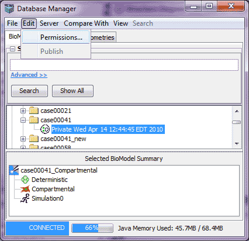

The Manage Database -> Edit menu option allows the user to perform edit operations from the Database Manager. NOTE: this menu sequence requires that a model or one of its editions/versions (viewed by expanding the tree) be selected.

The Manage Database -> Edit menu sequence has the following options: